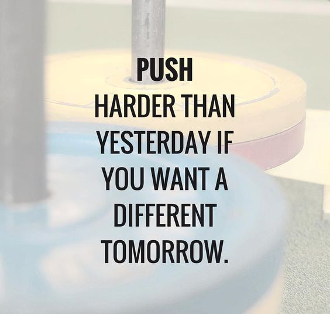

Although videos games are sincerely going downhill, there can be some possible chance for video games to make a comeback. Just have to go back to the roots of where video games grew from which is going backwards, caring about the community's needs for the game to be playable and enjoyable without bugs, glitches, a completely unfinished game, laggy servers, paying the game to get more things just to play or win the game which either way won't make the game really enjoyable. Although, not all games are perfect is true but isn't an excuse to not try to fix problems, take away things that actually worked, and taking away things that people like, enjoyed, and what made the game fun. The players need a cup of nostalgic games and no, not games that are good from the past but only coming back as a feature, a skin, or something to buy to apply to a weapon, HUD, etc. but rather something that brings the players back to their roots of where they are born from which change them into gamers. Lets see some data about games then and games now because the player base on steam, xbox, playstations, and other platforms would go to past games, other than Clash Royale, Clash of Clans, and other games that isn't involving a nostalgic rootings of most players from Britain, America, China, Russia, and more countries that can get their beatufiul birthed gamer hands on masterpieces in which the future generations may not even enjoy. or some scammy pay to win situations.
The data provide is to the right of the website. This data provides the number of players from past games and their children (Ex. Black Ops 1, Black Ops 2, Black Ops 4) but at their highest peak. This data was provided from Steam Charts (SteamPlayerCount and Steam DB). Older games will be marked with a golden, yellowish background while the newer or Modernized games have more of a brownish orangish color. Modernized and Older games will have different fonts and text colors as well. Developers will have a different color so the games can be differentiate from what game was created by who which are Treyarch and Infinity Ward.
| Game Title | Date | Peak Player Count | Developers |
|---|---|---|---|
| Call of Duty 4: Modern Warfare | April 15, 2010 | 1,798 | Infinity Ward |
| Call of Duty: Modern Warfare 2 | Nov. 26 2009 | 22,614 | Infinity Ward |
| Call of Duty: Black Ops | Oct. 28 2010 | 63,343 | Treyarch |
| Call of Duty: Black Ops 2 | Nov. 8 2012 | 18,277-70,819 | Treyarch |
| Call of Duty: Modern Warfare (2019) | Sep. 14 2023 | 3,195 | Infinity Ward |
| Call of Duty: Modern Warfare II (2020) | Unknown | Not Published | Infinity Ward |
| Call of Duty: Black Ops Cold War | Sep. 14 2023 | 3,693 | Treyarch (& SG) |
| Call of Duty: Black Ops 4 | Unknown | Not Published | Treyarch |
This data shows the shows that games in the past, like Modern Warfare 2, are games that people loved, enjoyed, were difted away from whatever was going on in their life, domestically. Even better is that there is a console version of these games which shows how people enjoyed the games, console or pc. Next will be the observing data from the console's point of view. The color and fonts will be the same but the date and peak player count will be chnaged. The data provided shows that although games enjoyed back then is a memory of how video gamers would normally played for fun rather than a few toxic players growing to thousands of toxic players, the human mind needs to enjoy the game and experience either fun glitches and bugs or few to no bugs within the game to play, give a rating of how they truly feel about the game and give at least not too bad of some criticism but to advance and give a test to what the users would want. The users would want people to just pour out their mind, their soul, their passion into the game they are creating currently and see if their own likings would meet up to what the game brings to the user. The 70k in te Black Ops 2 row (A Golden Time) was because most players on PC and Xbox360s as well as Play Station 3s were mostly playing Multiplayer which is still a huge factor to the Call of Duty community.
Once more, thank you user for listening/reading this argument. This will be the end of this website's argument about Free-To-Play video games needing to be more important for the grind rather than for the payers. It's community provides more passion and care towards the game than the rich that pays for happiness from teh game than grinding to enjoy the game and becoming more happier in the gaming life. Like always, have a good day.
That's all the rant I have now. If this collected your attention about Free To Play video games, then I'm glad it should at least take your heart and open your soul with a passion of video games having to be created not for your pockets to be empty with desparity because a player may be better than you but rather to enjoy the game and still give at least 50% or less of your own skills in a game. You can also send to help improve the websites and making them look more interesting to other users who come into interaction with the website itself. It'll probably look bland like this for now and I wouldn't be able to see the data of feedbacks but I do hope it's decent enough to convince players to stop being toxic and play a game they can enjoy without being a jerk to others and really meant it to try and discourage other all because they couldn't pull off a glitchy 1v6 in a Search and Destroy match.